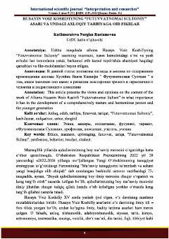

HVHusayn Voiz Koshifiyning “Futuvvatnomai Sultoniy” asarida axloqiy tarbiya va komil inson masalalari tahlili.
Ushbu maqola Husayn Voiz Koshifiyning “Futuvvatnomai Sultoniy” asaridagi axloqiy tarbiya, komil inson fazilatlari va ustoz-shogird munosabatlari haqidagi qarashlarini tahlil qiladi. Asarda keltirilgan futuvvat tushunchasi, uning inson kamolotiga ta'siri hamda yosh avlodni tarbiyalashdagi ahamiyati ilmiy jihatdan yoritib berilgan.